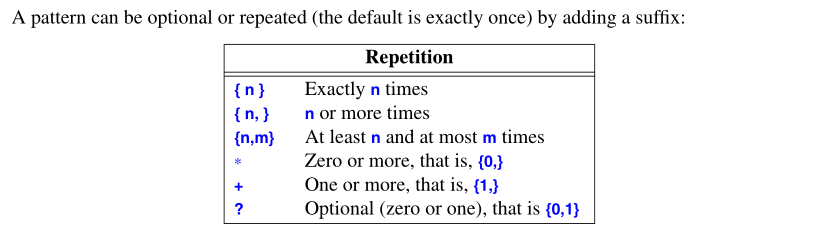

A Tour of C++
Excerpts from the book A Tour of C++
Modularity
Namespaces
namespaces is a mechanism for expressing that some declarations belong together and that their names shouldn’t clash with other names. For example:
namespace My_code {
class complex {
// ..
};
}
int My_code::main(){
complex z {1, 2};
// ...
}
int main() {
return My_code::main();
}
Here the main and complex class are not to be confused with the global main and std complex.
Error Handling
Exception
double& Vector::operator[](int i)
{
if (i<0 || size()<i)
throw out_of_range{"Vector::operator[]"};
return elem[i];
}
The throw transger control to a handler for exceptions of type out_of_range in some functions that directly or indirectly called Vector::operator[](). It will exit scopes and functions as needed to get back to a caller that has expressed interests in handling that kind of exception, invoking deconstructors along the way as needed. For example:
void f(Vector& v)
{
try {
v[v.size()] = 7; // beyond the end of v
}
catch (out_of_range) {
// ...handle range error...
}
}
We put code for which we are interested in handling exceptions into a try-block. The out_of_range type is defined in the standard library (in <stdexcept>).
A function that should never throw an exception can be declared noexcept.
void user(int sz) no except
{
Vector v(sz);
iota(&v[0],&v[sz],1)
// ...
}
If user() still throws, the standard-library function terminate() is called to immediately terminate the program.
static_assert
The static_assert mechanism can be used for anything that can be expressed in terms of constant expressions. That is, expressions that only involves values computed during compliation (in contrast to runtime).
constexpr double C = 299792.458;
const double local_max = 160.0/(60*60);
static_assert(local_max < C, "can't go that fast");
In general, static_assert(A,S) prints S as a compiler error message if A is not true
Classes
Here, we only consider three basic kinds of classes. They are:
- Concrete classes
- Abstract Classes
- Classes in class hierarchies
Concrete Types
The basic idea of concrete classes is that they behave “just like built-in types”. The defining characteristic of a concrete type is that its representation is part of its definition.
To increase flexibility, a concrete type can keep major parts of its representation on the free store (dynamic memory, heap) and access them through the part stored in the class object itself.
A Container Example
A container is an object holding a collection of elements.
class Vector {
private:
double* elem;
int sz;
public:
Vector(int s):elem{new double[s]}, sz{s} {
for (int i=0; i!=s; i++)
elem[i]=0;
}
~Vector() { delete[] elem; }
double& operator[](int i);
int size() const;
};
~Vector() is a destructor. The function will be called when the life cycle of the object ends.
Initializing Containers
class Vector {
public:
Vector(std::initializer_list<double>);
void push_back(double);
};
The push_back() is useful for input of arbitrary numbers of elements. For example:
Vector read(istream& is){
Vector v;
for (double d; is>>d;)
v.push_back(d)
return v;
}
The input loop is terminated by an end-of-file. The initializer-list constructor might be defined like this:
Vector::Vector(std::initializer_list<double> lst)
: elem{new double[lst.size()}, sz{static_cast<int>(lst.size())}
{
copy(lst.begin(),lst.end(),elem);
}
A static_cast does not check the value it is converting; the programmer is trusted to use it correctly.
Abstract Type
An abstract type is a type that completely that completely insulates a user from implementation details. To do that, we decouple the interface from the representation and give up genuine local variables. Since we don’t know anything about the representation of an abstract type (not even its size), we must allocate objects on the free store and access them through references or pointers.
class Container {
public:
virtual double& operator[](int) = 0;
virtual int size() const = 0;
virtual ~Container() {}
};
This class is a pure interface to specific containers defined later. The word virtual means may be redefined later in a class derived from this one. A class derived from Container provides an implementation for the Container interface. The = 0 syntax says the function is pure virtual; that is, some class derived from Container must define the function.Thus, it is not possible to define an object that is just a Container.
A class with a pure virtual function is called an abstract class. The Container can be used like this to display polymorphic
void use(Container& c){
const int sz = c.size();
for (int i=0; i!=sz; i++)
cout << c[i] << '\n';
}
Note how use() is completely ignorance of implementation details. It uses size() and [] without any idea of exactly which type provides their implementation.
Container does not have a constructor, which is common for abstract classes. Because it does not have any data to initialize. On the other hand, Container does have a destructor and that destructor is virtual, which is common for abstract classes.
A container that implements the functions required by the interface could use the concrete class Vector
class Vector_container : public Container {
Vector v;
public:
Vector_container(int s): v(s) {}
~Vector_container() {}
double& operator[](int i)
};
Virutal Functions
The compiler will convert the name of a virtual function into an index into a table of pointers to functions. The table is usuallly called virtual function table or simply the vtbl. Each class with virtual functions has its own vtbl identifying its virtual functions.

This mechanism allows polymorphism and decision at runtime. The overhead is essentially a table and can be made almost as efficient as the “normal function call”.
Explicit Overriding
A function in a derived class overrides a virtual function in a base class if that function has exactly the same name and type. In large hierachies, it’s not always obvious if overriding is intended. To avoid confusin in such cases, a programmer can explicitly state that a function is meant to override. For example:
class Smiley : public Circle {
public:
Smiley(Point p, int r) : Circle{p,r}, mouth{nullptr} {}
~Smiley() {
delete mouth;
for (auto p : eyes)
delete p;
}
void move(Point to) override;
void draw() const override;
void rotate(int) override;
void add_eye(Shape* s) { eyes.push_back(s); }
void set_mouth(Shape* );
virtual void wink(int i);
private:
vector<Shape*> eyes;
Shape* mouth;
};
Now the compiler will complain if you are to mis-spell move as mve
Benefits from Hierarchies
A class hierachy offers two kinds of benefits:
Interface inheritance: The base class acts as an interface for the derived class. Such base classes are often abstract.
Implementation inheritance: A base class provides functions or data that simplifies the implementation of a derived class. Such base classes often have their data members and constructors.
We tend to define concrete classes as local variables much like built-in types. But tend to allocate classes in class hierarchies using new, and access them through pointer or references. This is because we would like to use delete (i.e, explicitly invoking the derived class’s deconstructor) to manage resources.
Hierarchy Navigation
We can use dynamic_cast to cast a base type to its derived type. For example:
Shape* ps {read_shape(cin)};
if (Smiley* p = dynamic_cast<Smiley*>(ps)) {
// ... is a pointer pointing to Smiley
}
else {
// ... not a Smiley, try something else
}
After casting, we can use the functions that is only defined in Smiley but not in Shape. If dynamic_cast fails it will return a nullptr.
When a different type is unacceptable, we can simply dynamic_cast to a referene type. If the object is not of the expected type, bad_cast is thrown.
Shape* ps {read_shape(cin)};
Smiley& r {dynamic_cast<Smiley&>(*ps)};
Avoiding Resource Leaks
We note that the owner of a container of Shape pointers might not delete the objects pointed to.
One solution is to return a standard-library unique_ptr rather than a “naked pointer” and store unique_ptrs in the container.
unique_ptr<Shape> read_shape(istream& is)
{
switch(k) {
case Kind::circle:
// read circle data into p and r
return unique_ptr<Shape>{new Circle{p,r}};
}
// ...
}
void user()
{
vector<unique_ptr<Shape>> v;
while (cin)
v.push_back(read_shape(cin));
draw_all(v);
rotate_all(v,45);
} // all shapes implicitly destroyed
Now the object is owned by the unique_ptr and will delete the object when it’s no longer needed, that is, when its unique_ptr goes out of scope.
Copy and Move
By default, objects can be copied. That is true for objects of user-defined types as well as for built-in types. The default meaning of copy is memberwise copy: copy each member.
Copying Containers
When a class is a resource handle - that is, when the class is responsible for an object accessed through a pointer - the default memberwise copy is a disaster.
void bad_copy(Vector v1)
{
Vector v2 = v1;
v1[0] = 2; // v2[0] is also 2!
v2[1] = 3; // v1[1] is also 3!
}

Copying of an object of a class is defined by two members: a copy constructor and a copy assignment
class Vector {
private:
double* elem
int sz;
public:
Vector(int s);
~Vector() { delete[] elem; }
Vector(const Vector& a);
Vector& operator=(const Vector& a);
double& operator[](int i);
const double& operator[](int i) const;
int size() const;
};
A situable definition of a copy constructor for Vector allocates the space for the required number of elements then copies the elements into it.
Vector::Vector(const Vector& a)
:elem(new double[a.size]),
sz{a.sz}
{
for (int i=0; i!=sz; i++)
elem[i] = a.elem[i]
}
And we need a copy assignment in addition to the copy constructor.

Moving Containers
We can control copying by defining a copy constructor and copy assignment, but copying can be costly for large container. We avoid the cost of copying when we pass objects to a function by using references, but we can’t return a reference to a local object as the result ( the local object would be destroyed by the time the caller got a chance to look at it). Consider:
Vector operator+(const Vector& a, const Vector& b)
{
if (a.size()!=b.size())
throw Vector_size_mismatch{};
Vector res(a.size());
for (int i=0; i!=a.size();++i)
res[i]=a[i]+b[i];
return res;
}
Returning from a + involves copying the result out of the local variable into some place where the caller can access it. We might use this + like
Vector r;
r = x + y + z;
This would be copying a Vector at least twice (one for each use of +). In these cases, we don’t want to copy but to move the object out of a function. This can be done as follows:
class Vector {
Vector(Vector&& a); // move constructor
Vector& operator=(Vector&& a); // move assignment
};
Given that definition, the compiler will choose the move constructor to implement the transfer of the return value out of the function. This means r=x+y+z will involve no copying of Vectors.
As is typical, Vector‘s move constructor is trivial to define.
Vector::Vector(Vector&& a)
:elem{a.elem},
sz{a.sz}
{
a.elem = nullptr; // now a has no elements
a.sz = 0;
}
// after this, a's destructor is likely to be called, we
// set the handle to nullptr to avoid deleting resources
The && means rvalue reference and is a reference to which we can bind an rvalue. rvalue is intended to complement lvalue, which roughly means “something that can appear on the left-hand side of an assignment”. So rvalue is a value that you can’t assign to, such as an integer returned by a function call. Thus, an rvaule is a reference to something that nobody else can assign to, so that we can safely “steal” its value.
The move operation is applied when an rvalue reference is used as an initializer or as the right-hand side of an assignment.
Where the programmer knows that a value will not be used again, but the compiler can’t be expected to be smart enough to figure that out, the programmer can be specific:
Vector f()
{
Vector x(1000);
Vector y(1000);
Vector z(1000);
z = x; // we get a copy
y = std::move(x); // we get a move
return z; // we get a move
}
The standard-library function move() returns doesn’t actually move anything, instead it returns an rvalue reference of its argument, much like a typecast.
Just before return we have:

A nice reference for rvalue and move. In short, remember we are ‘stealing’ the pointer and the object which get stolen needs set its pointer to nullptr because its destructor will soon be called.
Essential Operations
Constructor, destructor, copy and move operations for a type are not logically separate. We must define them as a matched set or suffer logical or performance problems. If a class X has a destructor that performs a nontrivial task, such as free-store deallocation or lock release, the class is likely to need the full complement of functions:
class X {
public:
X(sometype); // "ordinary constructor"
X(); // default constructor
X(const X&); // copy constructor
X(X&&); // move constructor
X& operator=(const X&); // copy assignment: clean up target and copy
X& operator=(X&&); // move assignment: clean up target and move
~X(); // deconstructor: clean up
};
We can be explicit about generating default implementations as follows:
class Y {
public:
Y(sometype);
Y(const Y&) = default; // I do want the default copy constructor (member-wise assignment)
Y(Y&&) = default; // and the default move constructor
};
If you are explicit about some defaults, other default definitions will not be generated. It is good practice to be explicit if the class have reference or pointer to some resources
A consructor taking a single argument defines a conversion from its argument type. For example, complex provides a constructor for a double:
complex z1 = 3.14; // z1 becomes {3.14, 0.0}
complex z2 = z1*2; // z2 becomes {6.28, 0.0}
But this is not always desired. For example, Vector provides a constructor from an int
Vector v1 = 7; // OK: v1 has 7 elements
But this is not a desired behavior. And the standard-library vector does not allow this int-to-vector conversion. We can avoid this problem by saying only explicit construction is allowed. That is,
class Vector {
public:
explicit Vector(int s); // no implicit conversion from int to Vector
};
This gives us:
Vector v1(7); // OK
Vector v2 = 7; // error: no implicit conversion allowed
It turns out more types are like Vector so it’s usually good practice to use explicit for constructor with a single argument unless there is a good reason not to.
Resource Management
//ADVANCED TOPIC CAN’T REALLY UNDERSTAND…
Suppressing Operations
Using the default copy or move for a class in a hierarchy is typically a disaster: given only a pointer to a base, we simply don’t know what members the derived class has. So we can’t know how to copy them. So, the best thing to do is usually to delete the default copy and move operations, that is, to eliminate the default definitions of those two operations.
class Shape {
public:
Shape(const Shape&) =delete; // no copy ops
Shape& operator=(const Shape&) =delete;
Shape(Shape&&) =delete; // no move ops
Shape& operator=(Shape&&) = delete;
~Shape();
};
A move operation is not implicitly generated for a class where the user has explicitly declared a destructor, so you get a compiler error if you try to move a Shape.
The =delete mechanism is general and can be used to suppress any operation.
Templates
We can generalize our vector-of-doubles type to a vector-of-anything type by making it a template and replacing the specific type double with a parameter.
template<typename T>
class Vector {
private:
T* elem;
int sz;
public:
explicit Vector(int s);
~Vector() { delete[] elem; }
// ...copy and move operations
T& operator[](int i)
const T& operator[](int i) const;
int size() const { return sz; }
};
C++ allows you to overload function just by const-ness. When the object is not modified by const, non-const version will be used, and vice versa.
Note that template<class T> is equivalent to template<typename T>. The function can be defined similarly.
template<typename T>
Vector<T>::Vector(int s)
{
if (s<0)
throw Negative_size{};
elem = new T[s];
sz = s;
}
Remembering the template<typename T> prefix.
To support range-for loop for our vector, we must define suitable begin() and end() functions:
template<typename T>
T* begin(Vector<T>& x)
{
return x.size() ? &x[0] : nullptr;
}
template<typename T>
T* end(Vector<T>& x)
{
return begin(x)+x.size(); // pointer to one-past-last element
}
Given those, we can write:
void f2(Vector<string>& vs)
{
for (auto& s : vs)
cout << s << '\n';
}
Templates are a compile-time mechansm, so their use incurs no runtime overhead compared to hand-crafted code.
In addition to type arguments, a template can take value arguments. For example:
template<typename T, int N>
struct Buffer {
using value_type = T;
constexpr int size() { return N; }
T[N];
///
};
Function Objects
We can define function object (somtimes called a functor), which is objects that can be called like functions. For example:
1 | |
The function called operator() implements the “function call”, “call” or “application” operator (). We can define name variables of type Less_than for some argument type:
Less_than<int> lti {42}; // lti(i) will compare i to 42 using (i<42)
Less_than<string> lts {"Backus"}; // lts(s) will compare s to "Backus" using <
We can call such an object, just as we call a function
void fct(int n, const string& s)
{
bool b1 = lti(n);
bool b2 = lts(s);
// ...
}
Such function objects are widely used as arguments to algorithms. For example, we can count the occurrences of values for which a predicate returns true:
template<typename C, typename P>
int count(const C& c, P pred)
{
int cnt = 0;
for (const auto& x: c)
if (pred(x))
++cnt;
return cnt;
}
A predicate is something that we can invoke to return true or false. For example:
void f(const Vector<int>& vec, const list<string>& lst, int x, const string& s)
{
cout << "number of values less than " << x
<< ": " << count(vec, Less_than<int>{x})
<< "\n";
cout << "number of values less than " << s
<< ": " << count(vec, Less_than<string>{s})
<< "\n";
}
where Less_than<int>{x} constructs an object for which the call operator compares to the int called x; They carry the value to be compared against with them. We don’t have to write a separate function for each value (and each type).
Function objects used to specify the meaning of key operations of a general algorithm are often referred to as policy objects.
We can also use a lambda expression to generate a function object exactly like Less_than<int>{x}
void f(const Vector<int>& vec, const list<string>& lst, int x, const string& s)
{
cout << "number of values less than " << x
<< ": " << count(vec, [&](int a){ return a<x;})
<< "\n";
cout << "number of values less than " << s
<< ": " << count(vec, [&](const string& a) { return a<s; })
<< "\n";
}
The [&] is a capture list specifying that local names used (such as x) will be accessed through references. Capture nothing is [], capture all local names used by references is [&], and capture all local names used by value is [=]
Do not abuse lambda expression. If the expression is too complicated, do name the operation to be more clear about its purpose
Function objects (in particular, lambdas) can help by allowing us to separate the traversal of the container from the specification of what is to be done with each element.
template<typename C, typename Oper>
void for_all(C& c, Oper op) // assume that C is a container of pointers
{
for (auto& x : c)
op(*x) // pass op() a reference to each element pointed to
}
Now, we can write a version of user()without writing a set of _all functions:
void user()
{
vector<unique_ptr<Shape>> v;
while(cin)
v.push_back(read_shape(cin));
for_all(v,[](Shape& s){ s.draw() };
for_all(v,[](Shape& s){ s.rotate(45) };
}
The lambda doesn’t have to care exactly how the objects are stored in the container because a reference to Shape is passed. Those for_all() calls would still work if v is changed to a vector<Shape*>
Variadic Templates
A template can be defined to accept an arbitrary number of arguments of arbitrary types. Such a template is called a variadic template. For example:
void f() {} // do nothing if no argument given
template<typename T, typename... Tail>
void f(T head, Tail... tail)
{
g(head); // do something to head
f(tail...); // try again with tail
}
The key to implementing a variadic template is to note that when you pass a list of arguments to it, you can separate the first argument from the rest. Here, we do something to the first argument (the head) and then recursively call f() with the rest of the arguments (the tail). THe ellipsis, ..., is used to indicate “the rest” of a list. Eventually, tail will become empty and we need a separate function to deal with that.
We can call f() like this:
int main()
{
cout << "first: ";
f(1,2.2,"hello");
cout << "\nsecond:";
f(0.2,'c',"yuck!",0,1,2);
cout << "\n";
}
Obviously, you can make g(head) do whatever you please.
Aliases
It is very common for a prameterized type to provide an alias for types related to their template arguments. For example:
template<typename T>
class Vector {
public:
using value_type = T;
// ...
};
In fact, every standard-library container provides a value_type as the name of its value type. This allows us to write code that will work for every container that follows this convention. For example:
template<typename C>
using Element_type = typename C::value_type; // the type of C's element
template<typename Container>
void algo(Container& c)
{
Vector<Element_type<Container>> vec;
// ...
}
The aliasing mechanism can be used to define a new template by binding some or all template arguments. For example:
template<typename Key, typename Value>
class Map {
// ...
};
template<typename Value>
using String_map = Map<string, Value>;
String_map<int> m; // m is a Map<string, int>
Template Compilation Model
The compiler generates the code for the specific types only when you instantiates the object with specific types. For example,
template<typename T>
class Foo
{
public:
T& bar()
{
return subject;
}
private:
T subject;
};
as soon as you have the following instantiations
Foo<int> fooInt;
You will effectively generate the same linkable code as you would have defined classes like
class FooInt
{
public:
int& bar()
{
return subject;
}
private:
int subject;
};
And instantiate the variable like
FooInt foInt;
A consequence is that the template definitions need to be seen with the header (included) files. Otherwise the compiler won’t be able to generate the code.
Library Overview
The facilities provided by the standard library can be classified as:
- Run-time language support (for allocation and run-time type information)
- The C standard library
- Strings (with support for international character sets and localization)
- Support for regular expression matching
- I/O streams is an extensible framework for input and output to which users can add their own types, streams, buffering strategies, locales and character sets
- A framework of containers (such as
vectorandmap) and algorithms (such asfind(),sort(), andmerge()) - Support for numerical computation (such as standard mathematical functions, complex numbers, vectors with arithmetic operations, and random number generators)
- Support for concurrent programming, including
threadsand locks - Utilities to support template metaprogramming
- “Smart pointers” for resource management (
unique_ptrandshared_ptr) and an interface to garbage collector - Special-purpose container, such as
array,bitsetandtuple
Strings and Regular Expressions
Strings
You can concatenate a string with a string literral, a C-style string or a character to a string using + or += operator. The standard string has a move constructor so returning even long strings by value is efficient.
A string is mutable. In addition to = and +=, subscripting [], and substring operations are supported. Among other useful features, it provides the ability to manipulate substrings. For example:
string name = "Niels Stroustrup";
void m3()
{
string s = name.substr(6,10); // s = "Stroustrup"
name.replace(0,5,"nicholas"); // name becomes "nicholas Stroustrup"
name[0] = toupper(name[0]); // name becomes "nicholas Stroustrup"
}
The substr() operation returns a string that is a copy of the substring indicated by its arguments. The first argument is an index and the second a length.
The replace() operation replaces a substring with a value. If you need a C-style string, you can use string::c_str(), but this is READ ONLY.
string Implementation
string is usually implemented using the short-string optimization. That is, short string values are kept in the string object itself and only longer strings are placed on free store. Consider:
string s1 {"Annemarie"}; // short string
string s2 {"Annemarie Stroustrup"}; // long string
The memory layout will be something like:

The actual performance of strings can dependent critically on the run-time environment.
To handle multiple character sets, string is really an alias for a general template basic_string with the character type char
template<typename Char>
class basic_string {
// ...string of Char
};
using string = basic_string<char>;
A user can define strings of arbitrary character types. For example, assuming we are using Japancese character type Jchar, we can write:
using Jstring = basic_string<Jchar>;
Similarly, we can handle Unicode string.
Regular Expression
Regular expression are powerful tool for text processing. In <regex>, the standard library provides suport for regular expressions in the form of the std::regex clas and its supporting functions.
To express the pattern, raw string literal are often used which starts with R"( and terminated by )". This allows backslashes and quotes to be used directy in the string.
In <regex>, the standard library provides support for regular expressions:
regex_match(): Match a regular expression against a string (of known size)regex_search(): Search for a string that matches a regular expression in an (arbitrarily long) stream of dataregex_replace(): Search for strings that match a regular expression in an (arbitrarily long) stream of data and replace themregex_iterator: Iterate over matches and submatchesregex_token_iterator: Iterate over non-matches
Searching
The simplest way of using a pattern is to search for it in a stream:
int lineno = 0;
for (string line; getline(cin,line); ){
++lineno;
smatch matches;
if (regex_search(line, matches, pat))
cout << lineno << ":" << matches[0] << "\n";
}
The regex_search(line,matches,pat) searches the line for anything that matches the regular expression stored in pat and if it finds any matches, it stores them in matches. If no match was found, regex_search(line, matches, pat) returns false. The s preceeding smatch means “sub” or “string”, and an smatch is a vector of sub-matches of type string. The first element matches[0], is the complete match.
matches[0] is similar to re.search(pat).group(0) in Python. matches[1] is the first group which is user defined.
Regular Expression Notation



Below are some examples of regular expressions:

A group (a subpattern) potentially to be represented by a sub_match is delimited by parentheses. If you need parentheses that should not define a subpattern, use (? rather than the plain (.
I/O Streams
An ostream converts typed objects to a stream of characters (bytes). An istream convers a stream of characters (bytes) to typed objects.


Output
In <ostream>, the I/O stream library defines output for every built-in type. The operator << (“put to”) is used as an output operator on objects of type ostream; cout is the standard output stream and cerr is the standard stream for reporting errors. Basic usage is as follows:
void h2(int i)
{
cout << "the value of i is " << i << "\n";
}
Input
In <istream, the standard library offers istreams for input. The operator >> (“get from”) is used as an input operator; cin is the standard input stream. The type of the right-hand operand of >> determines what input is accepted and what is the target of the input operation. For example:
void f()
{
int i;
cin >> i;
double d;
cin >> d;
}
Input operations can be chained as well, so equivalently:
void f()
{
int i;
double d;
cin >> i >> d; // read into i and d
}
By default, a whitespace chatacter, such as a space or a newline, terminates the read. You can read a whole line including the terminating newline character, but not delivered to the target using the getline() function. For example:
void hello_line()
{
cout << "Please enter your name\n";
string str;
getline(cin, str);
cout << "Hello," << str << "!\n";
}
The newline that terminated the line is discarded, so cin is ready for the next input line.
I/O State
An iostream has a state that we can examine to determine whether an operation succeeded. The most common use is to read a sequence of values:
vector<int> read_ints(istream& is)
{
vector<int> res;
int i;
while (is >> i)
res.push_back(i);
return res;
}
This reads from is until something that is not an integer is encountered. That something will typically be the end of input. Because is>>i returns a reference to is, and teting an iostream yields true if the stream is ready or another operation.
In genral, the I/O state holds all the information needed to read or write, such as formatting information, error state, and what kind of buffering is used. In particular, the user can set the state to reflect that an error has occurred and clear the state if an error wasn’t serious. For example:
while(cin) {
for (int i; cin>>i;) {
// ...use the integer
}
if(cin.eof()) {
// ...all is well we reach the end-of-file
}
else if (cin.fail()) { // a potentailly recoverable error
cin.clear(); // reset the state to good()
char ch;
if (cin>>ch) {
switch(ch) {
case '{':
// ...start nested structure...
break;
case '}':
// ...end nested structure...
break;
default:
cin.setstate(ios_base::failbit); // add fail() to cin's state
}
}
}
}
I/O of User-Defined Types
The iostream library allows programmers to define I/O for their own types. For example, consider a simple Entry that we might use to represent entries in a telephone book;
struct Entry {
string name;
int number;
};
We can define a simple output operator to write an Entry using a {"name", number} format.
ostream& operator<<(ostream&os, const Entry& e)
{
return os << "{\"" << e.name << "\"," << e.number << "}";
}
A user-defined output operator takes its output stream (by reference) as its first argument and returns it as its result.
The corresponding input operator is more complicated becuase it has to check for correct formatting and deal with errors:
istream& operator>>(istream& is, Entry& e)
// read {"name", nummber} pair. Note: formatted with {"", and }
{
char c,c2;
if (is>>c && c=='{' && is>>c2 && c2=='"'){ // start with a {"
string name;
while(is.get(c) && c!='"')
name+=c;
if(is>>c&&c==','){
int number = 0;
if (is>>number>>c && c=='}') { // read the number and a }
e = {name,number};
return is;
}
}
is.setstate(ios_base::failbit); // add fail() to cin's state
return is;
}
When used as a condition, is>>c means “Did we succeed at reading from is into c?”
The is>>c skips whitespace by default, but is.get(c) does not, so that this Entry-input operator ignores (skips) whitespace outside the name string, but not within it.
Formatting
The simplest formatting controls are called manipulators and are found in <ios>, <istream>, <ostream> and <iomanip> (for manipulators that take arguments). For example, we can output integers as decimal, octal or hexadecimal numbers:
cout << 1234 << ',' << hex << 1234 << ',' << oct << 1234 << '\n';
We can explicitly set the output format for floating-point numbers:
constexpr double d = 123.456;
cout << d << ";" // use the default format for d
<< scientific << d << ";" // use 1.23e2 format
<< hexfloat << d << ";" // use hexadecimal
<< fixed << d << ";" // use 123.456 format
<< defaultfloat << d << "\n"; // use the default
Precision is an integer that determines the number of digits used to display a floating-point number:
The general format
defaultfloatlets the implementation choose a format that best preserve the numerical value. The precision specifies the maximum number of digitsThe scientific format
scientificpresents a value with one digit before a decimal point and an exponent. The precision specifies the maximum number of digits after the decimal point.The fixed format
fixedpresents a value as an integer part followed by a decimal point and a fractional part. The precision spcifies the maximum number of digits after the decimal point.cout.precision(8);
cout << 1234.56789 << ‘ ‘ << 1234.56789 << ‘ ‘ << 123456 << ‘\n’;cout.precision(4);
cout << 1234.56789 << ‘ ‘ << 1234.56789 << ‘ ‘ << 123456 << ‘\n’;
The manipulators are “sticky”; it persists for subsequent floating-point operations.
File Streams
In <fstream>, the standard library provides streams to and from a file:
ifstreams for reading from a fileofstreams for writing to a filefstreams for reading from and writing to a file
For example:
ofstream ofs("target"); // "o" for "output"
if (!ofs)
error("couldn't open 'target' for writing")
Testing that a file has been properly opened is usually done by checking its state.
ifstream ifs("source");
if (!ifs)
error("couldn't open 'source' for reading)
String Streams
In <sstream> the standard library provides streams to and from a string
istringstreams for reading from astringostringstreams for writing to astringstringstreams for reading from and writing to astring
For example:
void test()
{
ostringstream oss;
oss << "temperature" << scientific << 123.4567890 << ".";
cout << oss.str() << '\n';
}
The result from an istringstream can be read using str(). One common use of an ostringstream is to format before giving the resulting string to a GUI. Similarly, a strig received from a GUI can be read using formatted input operations by putting it into an istringstream
A stringstream can be used for both reading and writing. For example, we can define an operation that can convert any type with a string representation to another that also has a string representation:
template<typename Target=string, typename Source=string>
Target to(Source arg)
{
stringstream interpreter;
Target result;
if (!(interpreter << arg) // writing arg into stream
|| !(interpreter >> result) // read result from stream
|| !(interpreter >> std::ws).eof()) // stuff left in stream?
throw runtime_error{"to<>() fialed"};
retrun result;
}
Containers
vector
A vector is a sequence of elements of a given type. The elements are stored contiguously in memory. A typical implementation of vector will consist of a handle holding pointers to the first element, one-past-the-last element, and one-past-the-last allocated space.

In addition, it holds an allocator (alloc), from which the vector can acquire memory for its elements. The default allocator uses new and delete to acquire and release memory.
We can initialize vector in following ways:
vector<T> vec = { ... }; // init with values
vector<T> vec; // size 0
vector<T> vec(23); // size 23
vector<double> vec(32,9.9); // size 32, initial value: 9.9
By default the elements are initialized to the element type’s default value (e.g. nullptr for pointers and 0 for numbers). You can specify a value if not happy with the default.
Copying and moving of vectors are implemented by constructors and assignment operators.
Elements
Like all standard-library containers, vector is a container of elements of some type T. If you have a class hierachy that relies on virtual functions to get polymorphic behavior, you should store a pointer.
vector<Shape> vs; // No, don't - there is no room for a Circle or a Smiley
vector<Shape*> vps; // better
vector<unique_ptr<Shape>> vups; // OK
Range Checking
The standard-library vector does not guarantee range checking. But it is easy to adapt it
template<typename T>
class Vec : public std::vector<T> {
public:
using vector<T>::vector;
T& operator[](int i)
{ return vector<T>::at(i); }
const T& operator[](int i) const
{ return vector<T>::at(i); }
}
at() operation will throw a out_of_range type exception if the index is out of bound.
Some compiler version actually has this vector implementation.
list
The standard library offers a doubly-linked list called list

To delete or insert a new entry before a list node, we use an iterator: a list iterator identifies an element of a list and can be used to iterate through a list. Every standard-library container provides the functions begin() and end(), which returns an iterator to the first and one-past-the-last element respectively. So we have two methods to find a number in our list
list<Entry> phone_book = { ... };
int get_number(const string& s)
{
for (const auto& x : phone_book ) // a for-range loop
if ( x.name == s )
return x.number;
return 0;
}
Or alternatively,
int get_number(const string& s)
{
for (auto p = phone_book.begin(); p!=phone_book.end(); ++p)
if (p->name == s)
return p->number;
return 0;
}
Adding elements to a list and removing elements from a list is easy with iterator
void f(const Entry& ee, list<Entry>::iterator p, list<Entry>::iterator q)
{
phone_book.insert(p, ee);
phone_book.erase(q);
}
vectorperforms better for traversal and for sorting and searching
map
The standard library offers a search tree (a red-black tree) called map:

In other contexts, a map is known as an associative array or a dictionary. It is implemented as a balanced binary tree.
The STL map is optimized for lookup.
unordered_map
The cost of a map lookup is O(log(n)) where n is the number of elements in the map. That’s pretty good. However, in many case we can do better by using a hashed lookup.

Algorithms
sort
The standard library provides the most common algorithms for containers in addition to providing the most common container types. For example, we can simply and efficiently sort a vector of Entrys and place a copy of each unique vector element on a list
void f(vector<Entry>& vec, list<Entry>& lst)
{
sort(vec.begin(), vec.end());
unique_copy(vec.begin(), vec.end(), lst.begin());
}
For this to work, less than (<) must be defined for Entrys. For example:
bool operator<(const Entry& x, const Entry& y)
{
return x.name < y.name;
}
A standard algorithm is expressed in terms of (half-open sequences of elements. A sequence is represented by a pair of iterators specifying the first element and the one-beyond-the-last element.
In the previous example, lst should at least have as many elements as there are unique elements in vec. If we want the algorithm to make room for the new elements automatically, we can use
list<Entry> f(vector<Entry>& vec)
{
list<Entry> res;
sort(vec.begin(), vec.end());
unique_copy(vec.begin(), vec.end(), back_inserter(res));
return res;
}
The call back_inserter(res) constructs an iterator for res that adds elements at the end of a container, extending the container to make room for them. This saves us from having to allocate a fixed amount of space and then filling it.
Use of Iterators
Many algorithms return iterators. For example, the standard algorithm find looks for a value in a sequence and returns an iterator to the element found:
bool has_c(const string& s, char c)
{
auto p = find(s.begin(), s.end(), c);
if ( p!=s.end() )
return true;
else
return false;
}
Like many standard-library search algorithms, find returns end() to indicate “not found”.
We can generalized the algorithm so that it works on every standard container for which it makes sense, for example:
template<typename C, typename V>
vector<typename C::iterator> find_all(C& c, V v)
{
vector<typename C::iterator> res;
for ( auto p=c.begin();p!=c.end();p++)
if (*p==v)
res.push_back(p);
return res;
}
The typename is needed to inform the compiler that C‘s iterator is supposed to be a type and not a value of some type. We can hide this implementation detail by introducing a type alias for Iterator:
template<typename T>
using Iterator = typename T::iterator; // T's iterator
...
vector<Iterator<C>> res;
...
Iterators are used to separate algorithms and containers. An algorithm operates on its data through iterators and knows nothing about the container. Conversely, a container knows nothing about the algorithms operating on its elements; all it does is to supply iterators upon request (begin() and end()). This model of separation between data storage and algorithms delivers very general and flexible software.
Iterator Types
Iterator is a concept. It needs to obey a few simple rules:
++operation gives the iterator to the next element*dereferences the iterator and retrieves the object
The actual implementation of iterators depend on the data container we are using. Hence in gerneral, the iterators are available under the conventional names iterator and const_iterator. For example, list<Entry>::iterator is the general iterator for list<Entry>. We rarely have to worry abou the details of how that type is defined.
Stream Iterators
An input stream produces a sequence of values, and we write a sequence of values to an output stream. Consequently, the notion of iterators can be usefully applied to input and output.
To make an ostream_iterator, we need to specify which stream will be used and the type of objects written to it. For example:
ostream_iterator<string> oo {cout}; // write strings to cout
The effect of assigning to *oo is to write the assigned value to cout. For example:
int main()
{
*oo = "Hello,";
++oo;
*oo = "world!\n";
}
Similarly, an istream_iterator is something that allows us to treat an input stream as a read-only container. Again, we must specify the stream to be used and the type of values expected:
istream_iterator<string> ii {cin};
Input iterators are used in pairs representing a sequence, so we must provide an istream_iterator to indicate the end of input. This is the default istream_iterator:
istream_iterator<string> eos {};
Typically, istream_iterators and ostream_iterators are not used directly. Instead, they are provided as arguments to algorithms. For example, we can write a simple program to read a file, sort the words read, eliminate duplicates, and write the result to another file.
int main()
{
string from, to;
cin >> from >> to; // get source and target filenames
ifstream is {from};
istream_iterator<string> ii {is};
istream_iterator<string> eos {};
ofstream os {to};
ostream_iterator<string> oo {os, "\n"};
vector<string> b {ii,eos}; // b is a vector initialized from input
sort(b.begin(), b.end()); // sort the buffer
unique_copy(b.begin(), b.end(), oo); // copy buffer to output, discard replicated values
return !is.eof() || !os; // return error state
}
The above can be done more elegantly with
set<string> b {ii,eos};
copy(b.begin(), b.end(),oo);
Predicates
In the examples above, the algorithms have simply “built in” the action to be done for each element of a sequence. However, we often want to make that action a parameter to the algorithm. A predicate lookf for an element that fulfills a specified requirement. For example, we might want to search a map for the first value larget than 42.
void f(map<string,int>& m)
{
auto p = find_if(m.begin(),m.end()),Greater_than{42});
// ...
}
Here, Greater_than is a function object (functor) holding the value 42 to be compared against.
struct Greater_than {
int val;
Greater_than(int v): val{v} {}
bool operator()(const pair<string,int>& r) {return r.second > val;}
};
Alternatively, we can use lambda expression
auto p = find_if(m.begin(), m.end(), [](const pair<string,int>& r) {return r.second>42;});
Algorithm Overview
The standard library provides dozens of algorithms. The algorithms are defined in namespace std and presente in the <algorithm> header. These standard-library algorithms take sequences as inputs. A half-open sequence from b to e is referred to as [b:e). Here are a few examples:

Jinghong Chen @2021